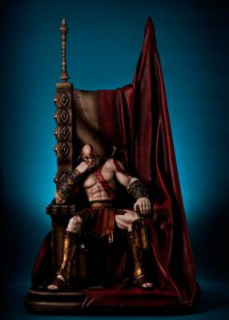

La infancia de Kratos es explicada durante el desarrollo del primer juego. Es maltratado, como solía hacerse a los niños altos y fuertes en la antigua Grecia. A su hermano, al tener una marca que el oráculo predijo que portaría el que causara la perdición del Olimpo, Ares lo secuestra y lo lleva al reino de la muerte. Luego de recibir entrenamiento, Kratos, ya casado y con una hija, Calíope, se convierte en un gran general del ejército espartano y prometió no detenerse hasta que la gloria de Esparta estuviera en lo más alto. Las tácticas de sus ejércitos eran brutales, pero muy efectivas. Sin embargo, un día, un enfrentamiento contra el ejército bárbaro dio un resultado adverso para su armada. Con su ejército destruido y a punto de ser asesinado por el líder bárbaro, Kratos pide la ayuda de Ares, el dios de la guerra, ofreciéndole su vida a cambio. El dios desciende de los cielos y acaba con todos los enemigos, luego entrega a Kratos las Espadas del Caos que son adheridas a sus brazos por cadenas. El guerrero espartano sucumbe totalmente al poder de Ares, quien le exige ciertas tareas de destrucción y conquista. Las tácticas del ejército de Kratos son aún más brutales que antes, asesinando sanguinariamente a cualquiera que opusiera alguna mínima resistencia. En una de sus misiones, Kratos debía quemar una aldea que se oponía a la armada de Esparta. En su afán de sangre y conquista, Kratos quiso ingresar al templo de la aldea, el oráculo le advierte que no debía entrar, sin embargo la hace a un lado e ingresa, asesinando a todos los presentes. Cuando lanza por última vez sus espadas hacia sus víctimas, entiende que había asesinado a su esposa e hija. Kratos queda devastado y como castigo por tal acción y brutalidad, tendría adheridas sobre su piel las cenizas de su esposa e hija por la eternidad; aunque Ares le explica que hizo eso para que no tenga ningún lazo afectivo y poder convertirlo en el guerrero perfecto, aun así, el guerrero espartano renunció a seguir siendo el súbdito del dios de la guerra.
